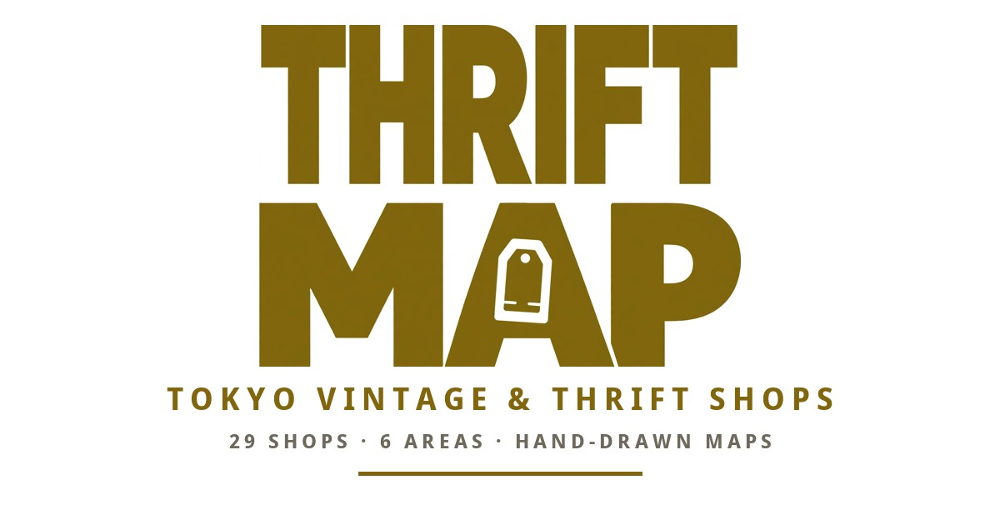
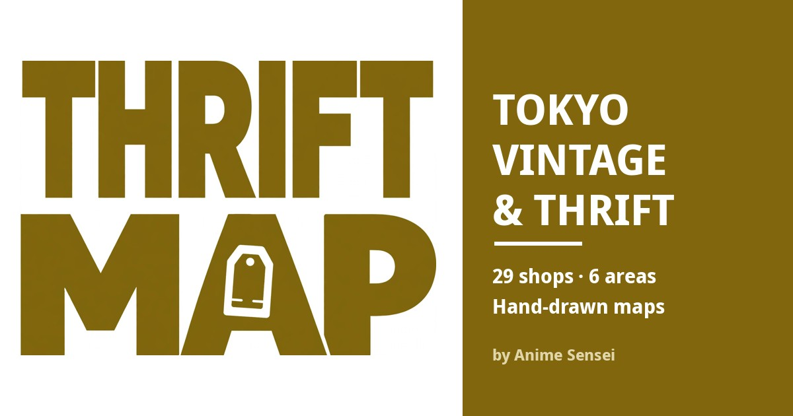
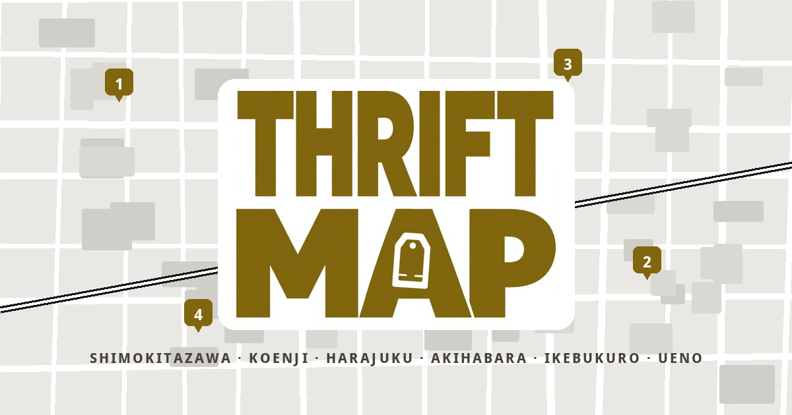
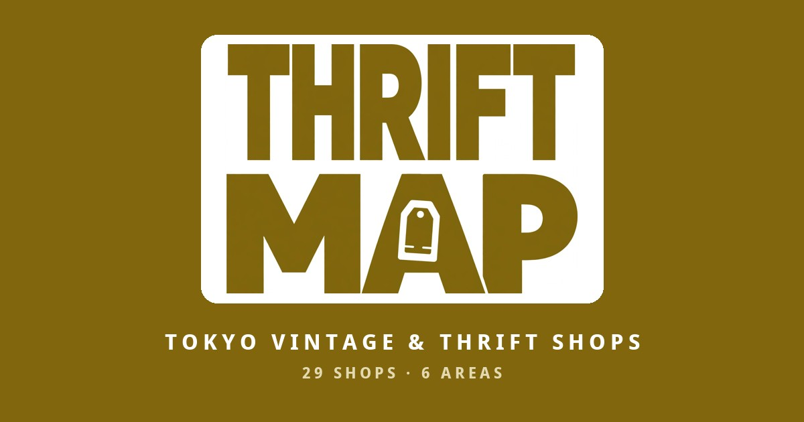
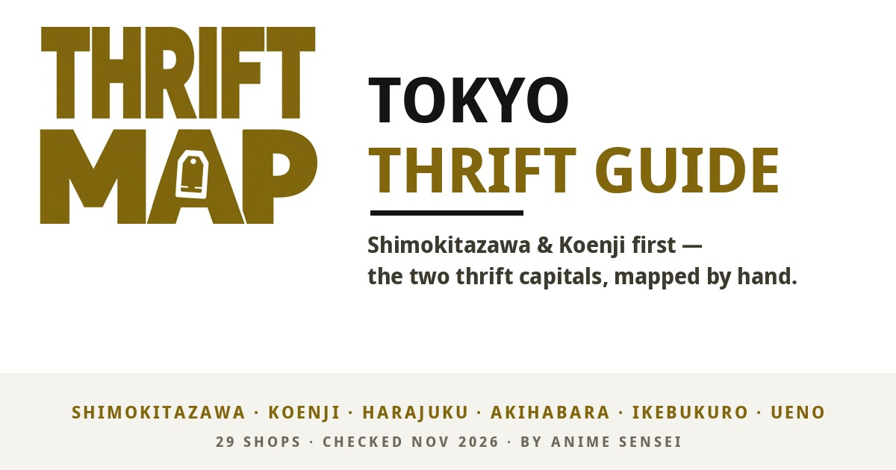

OGP candidates for the Thrift Map page, all built on the decided logo (No.1 price-tag pin · mustard / olive — letterforms untouched). The page currently carries No.1 as a provisional. Pick a number and that one becomes the official og:image.

1Logo Large on White— the house style: logo big and centered, tagline and counts below.

2Split Panel— logo on white at left, olive panel with the headline at right.

3Sketch Map— the logo on a card over a hand-drawn map with numbered pins, like the page itself.

4Olive Field— full olive background, logo in a white card, headline in white below.

5Editorial— small logo plus a big “TOKYO THRIFT GUIDE” headline and the area list.